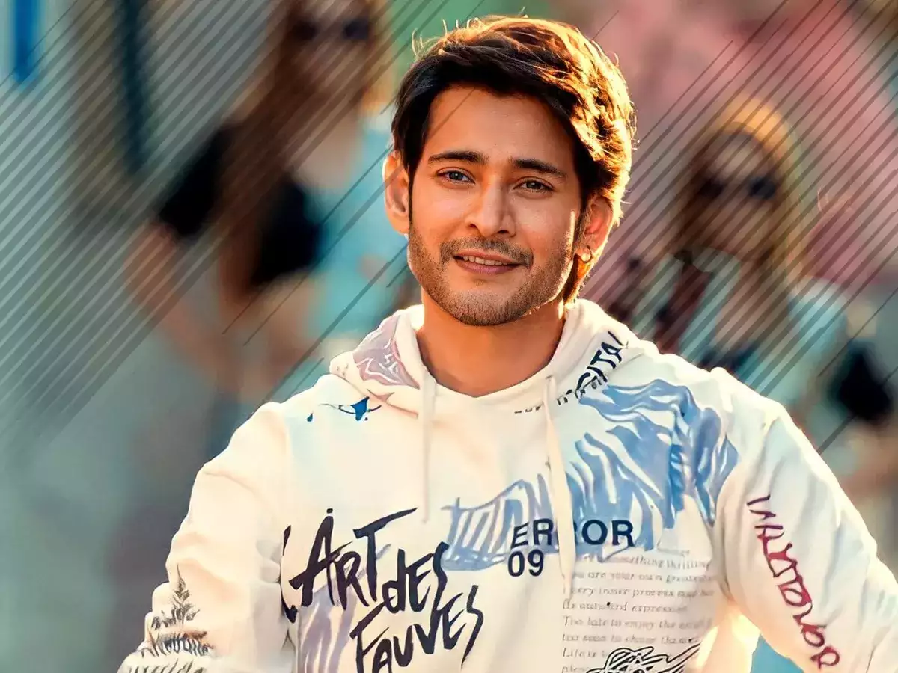
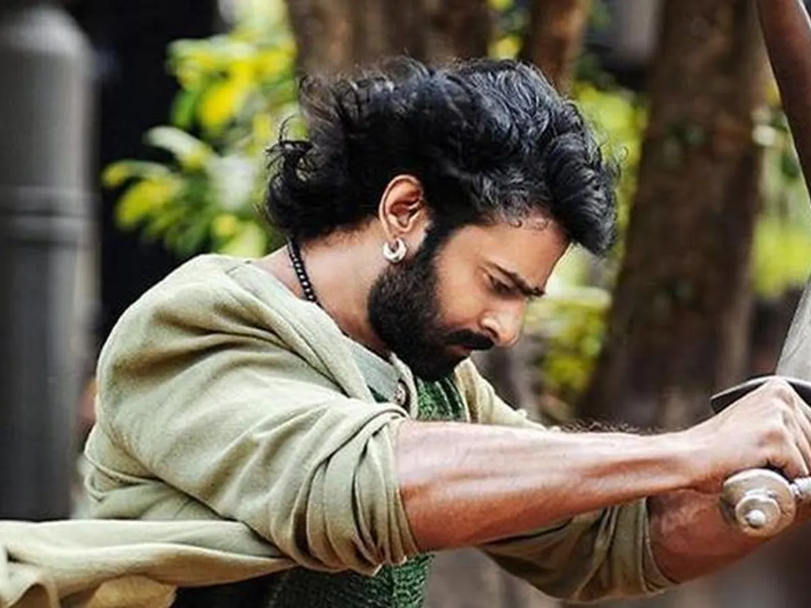
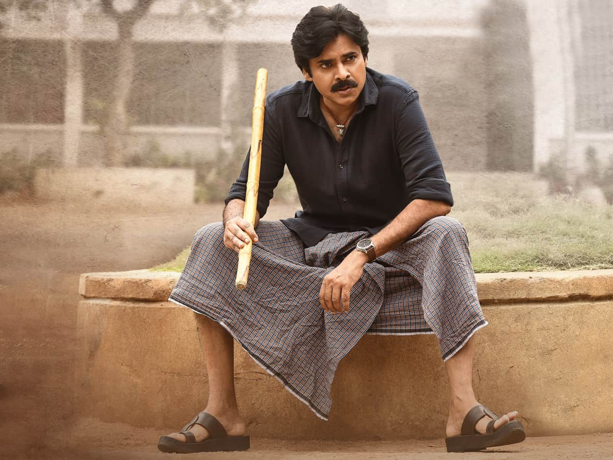

Most Fan Base Stars

Mahesh Babu
Ghattamaneni Mahesh Babu (born 9 August 1975) is an Indian actor, producer, media personality, and philanthropist who works mainly in Telugu cinema.

Prabhas
Uppalapati Venkata Suryanarayana Prabhas Raju (born 23 October 1979), known mononymously as Prabhas, is an Indian actor who works predominantly in Telugu cinema

Pawan kalyan
Pawan Kalyan (born Konidela Kalyan Babu; 2 September 1968 or 1971) is an Indian actor, filmmaker, and politician. His films are predominantly in Telugu